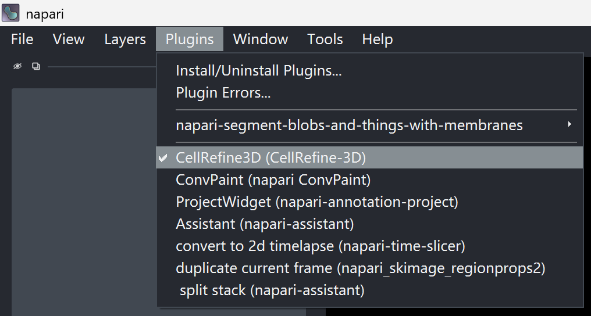
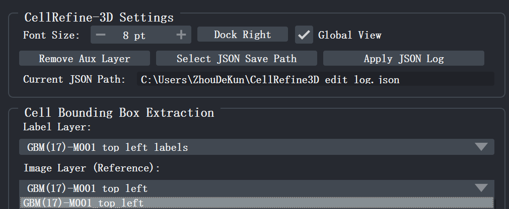

二、NuPatch3D 的安装与设置¶
2.1 系统与硬件要求¶
- 操作系统：Windows 10 或 macOS 26（Tahoe）及以上版本
- 硬件配置：Intel 或 AMD 处理器，16 GB 及以上内存
上述配置为经过验证的环境，其他硬件平台通常也可正常运行。
2.2 安装 NuPatch3D¶
NuPatch3D 是一款基于 napari 开发的插件，目前已适配 napari 0.6 版本。其他版本的 napari 可能存在兼容性问题。
目前，NuPatch3D 仅提供通过 GitHub 源码安装的方式，具体步骤如下：
# 1. 创建 Conda 环境
conda create -n napari-env python=3.11
# 2. 激活环境
conda activate napari-env
# 3. 安装 napari
pip install "napari[all]"
# 4. 克隆仓库
git clone https://github.com/Hagibis2019/CellRefine3D.git
cd CellRefine3D
# 5. 安装 NuPatch3D
pip install .
2.3 卸载¶
如需卸载插件，请在对应环境中运行：
pip uninstall cellrefine3d
2.4 启动 NuPatch3D¶
点击菜单栏 Plugins → CellRefine-3D (CellRefine-3D)，NuPatch3D 插件面板将自动停靠在 napari 窗口右侧。

图 4. 启动 NuPatch3D 插件
2.5 确认图层映射¶
插件启动后，Cell Bounding Box Extraction 区域中的 Label Layer 和 Image Layer (Reference) 下拉框会自动识别当前 napari 中可用的图层。请确认：
- Label Layer 对应预分割标签图层（Labels 类型）；
- Image Layer (Reference) 对应原始荧光图像图层（Image 类型）。
如果同时加载了多个同类型图层（例如多组标签图像），请在下拉框中手动选择当前需要编辑的目标图层。
提示
如果 Label Layer 未能自动识别标签图层，请先确认分割结果是否以 Labels 类型图层加载。若当前图层显示为 Image 类型，可在图层列表中选中该图层，右键选择 Convert to Labels（或重新以 Labels 图层方式加载标签图像），然后重新选中或切换目标标签图层。
2.6 配置插件工作环境¶
在开始编辑前，建议先在 CellRefine-3D Settings 区域（图 5）完成以下设置：
- 界面布局：如果 NuPatch3D 控制面板未显示在 napari 主窗口右侧，可点击 Dock Right 将其固定到窗口右侧。
- 字体大小：通过 Font Size 输入框实时调整 NuPatch3D 控制面板的字体大小。
- JSON 日志路径：点击 Select JSON Save Path 指定操作日志的保存位置。该文件用于记录编辑历史，是实现标注过程回溯与恢复的重要依据。默认文件名与当前 Image Layer 同名。请在开始标注前完成设置，并在标注过程中保持路径不变。设置完成后，Current JSON Path 文本框将显示当前生效的绝对路径。

图 5. NuPatch3D 基础设置面板